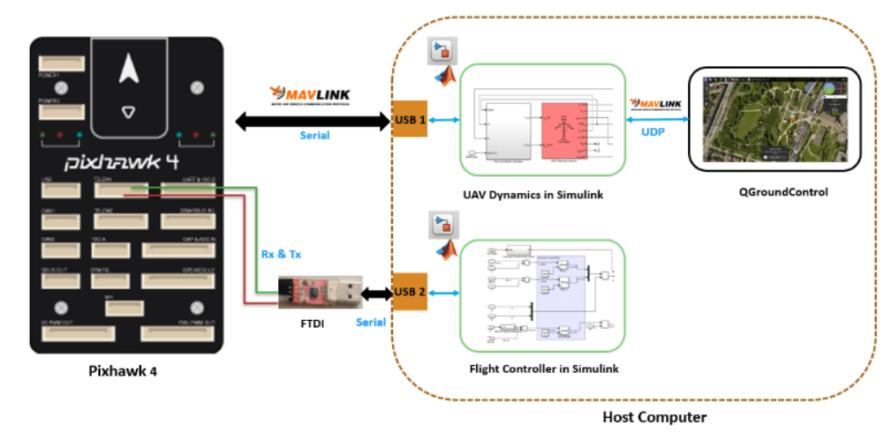

Academic Projects
Object Detection with Super-Resolution for Small Objects

In the field of object detection, accurately identifying small objects remains a significant challenge. This difficulty arises from the limited and distorted data present in small regions of interest (ROIs). This project explores a solution to overcome these limitations by utilizing a Super-Resolution (SR) technique to improve the detection of small objects, specifically focusing on weapon detection.
RepositoryHardware-In-The-Loop approach for fault simulation and validation of diagnostic modules in Unmanned Aerial Vehicles
This repository contains the code and models developed for fault diagnosis in UAVs (Unmanned Aerial Vehicles) using machine learning techniques. The project involves the implementation and analysis of diagnostic modules on both an on-board computer (simulation) and a real flight controller (Pixhawk).
RepositoryGeoPosBall

The GeoPosBall project is a geospatial data acquisition device designed for underwater use. It integrates advanced technologies, including the WTGAHRS2 module, M5Stamp S3 microcontroller, and SD card storage, providing a versatile solution for accurate location and orientation data.p> Repository